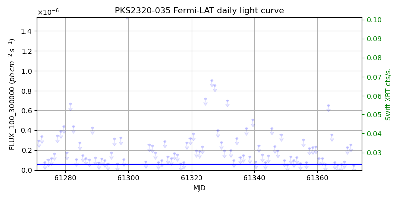
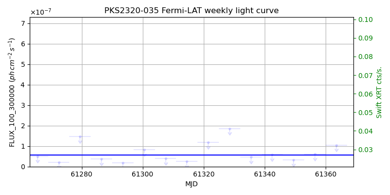
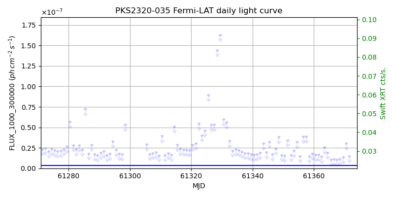
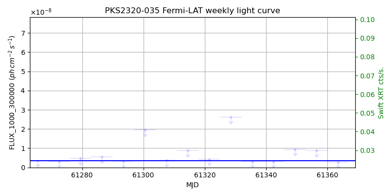

LAT Lightcurve site: https://fermi.gsfc.nasa.gov/ssc/data/access/lat/msl_lc/source/PKS_2320-035
Swift site: https://www.swift.psu.edu/monitoring/source.php?source=PKS2320-035
NED: Query
Time of last update of this page: UT: 2026-11-20 16:31 (MJD: 61364.689)
| Property | Value |
|---|---|
| R.A. | 23:23:31.92 |
| Dec. | -3:17:06.0 |
| z | 1.411 |
| 3FGL SpectrumType | LogParabola |
| 3FGL PL Index | |
| 3FGL Flux_100_300000 | 5.67e-08 1 / (s cm2) |
| 3FGL Flux_1000_300000 | 3.56e-09 1 / (s cm2) |
| 3FGL Flux >200 GeV | 9.86e-13 1 / (s cm2) |
| 3FGL Extrap. Crab >200 GeV | 0.00 |
| 3FGL Flux After EBL Absorption >200GeV | 3.26e-15 1 / (s cm2) |
| 3FGL EBL Crab Fraction >200GeV | 0.00 |

| MJD | dMJD | Flux | dFlux | Frac3FGL | FracCrab>200GeV | EBLFracCrab>200GeV |
|---|---|---|---|---|---|---|
| 61359.50 | 0.50 | 2.32e-07 | 0.00e+00 | 0.00 | 0.00 | 0.00 |
| 61360.50 | 0.50 | 1.19e-07 | 0.00e+00 | 0.00 | 0.00 | 0.00 |
| 61361.50 | 0.50 | 1.17e-07 | 0.00e+00 | 0.00 | 0.00 | 0.00 |
| 61362.50 | 0.50 | 5.99e-08 | 0.00e+00 | 0.00 | 0.00 | 0.00 |
| 61363.50 | 0.50 | 6.53e-07 | 0.00e+00 | 0.00 | 0.00 | 0.00 |

| MJD | dMJD | Flux | dFlux | Frac3FGL | FracCrab>200GeV | EBLFracCrab>200GeV |
|---|---|---|---|---|---|---|
| 61328.50 | 3.50 | 1.85e-07 | 0.00e+00 | 0.00 | 0.00 | 0.00 |
| 61335.50 | 3.50 | 4.71e-08 | 0.00e+00 | 0.00 | 0.00 | 0.00 |
| 61342.50 | 3.50 | 5.85e-08 | 0.00e+00 | 0.00 | 0.00 | 0.00 |
| 61349.50 | 3.50 | 3.25e-08 | 0.00e+00 | 0.00 | 0.00 | 0.00 |
| 61356.50 | 3.50 | 6.02e-08 | 0.00e+00 | 0.00 | 0.00 | 0.00 |

| MJD | dMJD | Flux | dFlux | Frac3FGL | FracCrab>200GeV | EBLFracCrab>200GeV |
|---|---|---|---|---|---|---|
| 61359.50 | 0.50 | 1.81e-08 | 0.00e+00 | 0.00 | 0.00 | 0.00 |
| 61360.50 | 0.50 | 1.65e-08 | 0.00e+00 | 0.00 | 0.00 | 0.00 |
| 61361.50 | 0.50 | 1.67e-08 | 0.00e+00 | 0.00 | 0.00 | 0.00 |
| 61362.50 | 0.50 | 1.43e-08 | 0.00e+00 | 0.00 | 0.00 | 0.00 |
| 61363.50 | 0.50 | 2.54e-08 | 0.00e+00 | 0.00 | 0.00 | 0.00 |

| MJD | dMJD | Flux | dFlux | Frac3FGL | FracCrab>200GeV | EBLFracCrab>200GeV |
|---|---|---|---|---|---|---|
| 61328.50 | 3.50 | 2.61e-08 | 0.00e+00 | 0.00 | 0.00 | 0.00 |
| 61335.50 | 3.50 | 3.04e-09 | 0.00e+00 | 0.00 | 0.00 | 0.00 |
| 61342.50 | 3.50 | 3.10e-09 | 0.00e+00 | 0.00 | 0.00 | 0.00 |
| 61349.50 | 3.50 | 9.41e-09 | 0.00e+00 | 0.00 | 0.00 | 0.00 |
| 61356.50 | 3.50 | 8.86e-09 | 0.00e+00 | 0.00 | 0.00 | 0.00 |
--------------------------------------------------------- Using user-supplied coords: 23:23:31.92 -3:17:06.0 2000 --------------------------------------------------------- FLWO UT night of: 2026-11-21 Local Sid. @ Midnight: 03:37 Sunset (-15.0) (local, UT): 18:33 01:33 Sunrise (-15.0) (local, UT): 05:47 12:47 Moonrise (local, UT): Moonset (local, UT): 03:40 10:40 Moon phase: 0.85 --------------------------------------------------------- AzTime LSID UT Obj_el Obj_az Mn_el Mn_az Sep. --------------------------------------------------------- 18:33 22:09 01:33 50.8 149.1 47.9 117.4 20.7 19:03 22:39 02:03 53.5 160.5 53.3 125.0 20.9 19:33 23:09 02:33 55.0 173.2 58.2 134.7 21.1 20:03 23:39 03:03 55.0 186.3 62.3 146.9 21.3 20:33 00:09 03:33 53.6 198.9 65.1 162.1 21.5 21:03 00:39 04:03 51.0 210.4 66.3 179.7 21.7 21:33 01:09 04:33 47.2 220.4 65.4 197.5 21.9 22:03 01:39 05:03 42.7 228.9 62.9 213.2 22.1 22:33 02:09 05:33 37.7 236.2 59.0 225.9 22.3 23:03 02:39 06:03 32.2 242.4 54.2 235.9 22.5 23:33 03:09 06:33 26.4 247.9 48.9 243.9 22.7 00:03 03:39 07:03 20.3 252.7 43.2 250.4 22.9 00:33 04:10 07:33 14.2 257.2 37.3 255.9 23.2 01:03 04:40 08:03 7.9 261.4 31.2 260.7 23.4 01:33 05:10 08:33 1.8 265.4 25.1 265.1 23.6 02:03 05:40 09:03 -4.2 269.3 19.0 269.2 23.9 02:33 06:10 09:33 -11.3 273.3 12.9 273.0 24.1 03:03 06:40 10:03 -17.7 277.4 6.8 276.9 24.4 03:33 07:10 10:33 -24.0 281.8 1.0 280.7 24.7 04:03 07:40 11:03 -30.2 286.5 -4.9 284.7 25.0 04:33 08:10 11:33 -36.2 291.9 -11.1 288.8 25.3 05:03 08:40 12:03 -42.0 298.0 -16.8 293.2 25.6 05:33 09:10 12:33 -47.5 305.3 -22.3 298.1 25.9 05:47 09:25 12:47 -49.9 309.3 -24.8 300.5 26.1 --------------------------------------------------------- Dark hours >55 deg.: 0.00